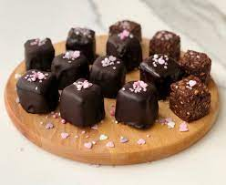

...Çikolata Küpleri...
çikolatalı ve çam fıstıklı tadımlık lezzetler ... Yalnızca 4
malzeme ile hazırlanan çikolata küpleri, renkli kağıtlarda veya kürdan batırılarak servis edilir.Özellikle
kalabalık sayfalarda verilen çikolata küpleri, doğum günü gibi özel etkinliklerde de sunulabilir.
Tarif:Kodluyoruz
Kaç Kişilik Süresi:4 Kişilik
Hazırlama Süresi:30 dakika
Pişirme Süresi:10 dakika
Çikolata Küpleri Tarifi İçin
Malzemeler
- 350 gr bitter çikolata
- 150 ml krema
- 1 çorba kaşığı tereyağı
- 150 gr çamfıstık(Badem veya fındık olabilir)
Çikolata Küpleri Nasıl Yapılır?
- Bitter çikolatayı benmari usulü eritin.
- Eriyen çikolatanın üzerine krema ve tereyağını ekleyip iyice karıştırıp tencereyi bir tezgaha alın
- Çamfıstıkları havanda çok az dövüp irili ufaklı parçalara bölün
- Ufalanan fıstıkları çikolatalı karışıma ekleyip karıştırın
- Hazırladığınız çikolatayı varsa alüminyum hazır bir kare tepsiye, yoksa kenarlarından taşarak yağlı
kağıt yerleştirdiğiniz küçük bir tepsiye dökün.
- Buzdolabında iki saat nekletin.
- Çikolatayı kalıptan çıkartın.Kare parçalara bölün.

Afiyet Olsun :)